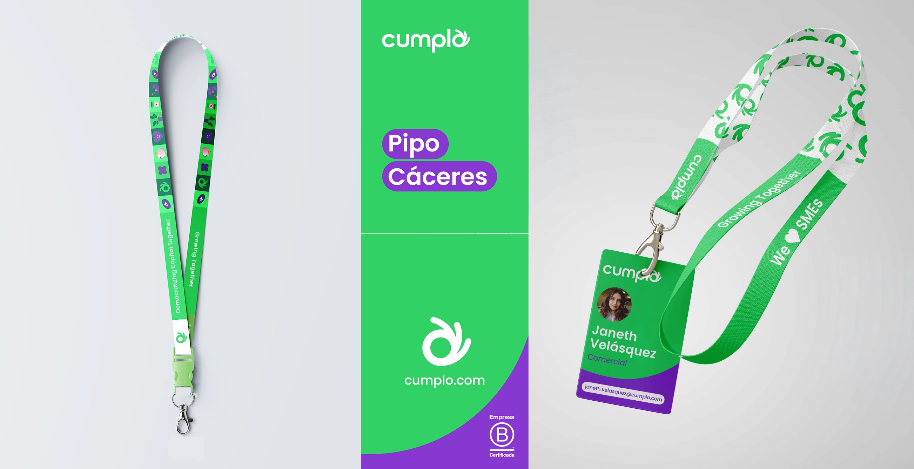
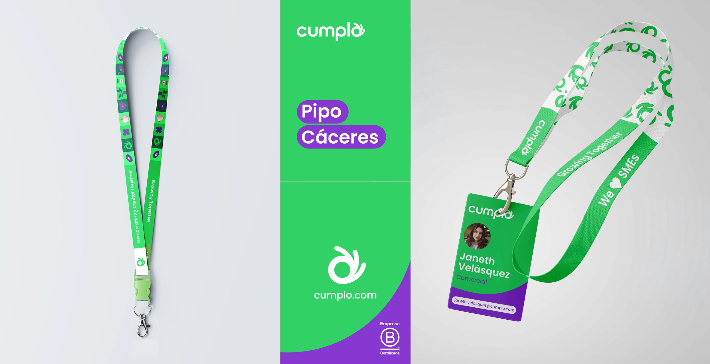

LANYARD CUMPLO
Overview:
Diseño de lanyard corporativo para la empresa Cumplo. Este proyecto incluye el desarrollo de la identidad visual del lanyard y tarjetas complementarias, manteniendo coherencia con la marca corporativa.
Especificaciones:
- Diseño de lanyard corporativo
- Sistema de tarjetas
- Aplicación de identidad de marca
- Producción y materiales
 
